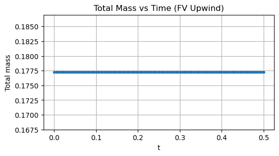

14Week 14 – Finite Volume Methods for Linear Advection
14.1 Learning Objectives
By the end of this notebook, students should be able to:
Derive a finite volume scheme from the integral (conservative) form of a PDE.
Define and interpret numerical fluxes across cell interfaces.
Implement first-order upwind and Lax–Friedrichs finite volume schemes for linear advection.
Compare mass conservation and numerical diffusion for different schemes.
Relate finite volume methods to finite difference schemes from Week 13.
14.2 1. Conservation Form of the Linear Advection Equation
We again consider the 1D linear advection equation: \[u_t + c\,u_x = 0.\]
This can be written in conservation form: \[u_t + \partial_x F(u) = 0, \quad F(u) = c\,u.\]
We partition the domain into cells: \[
C_j = [x_{j-1/2}, x_{j+1/2}], \quad j = 0,1,\dots,N-1,
\] with cell centers at \(x_j\) and cell width \(\Delta x\).
Integrating the conservation law over cell \(C_j\) gives \[
\frac{d}{dt}\bar u_j(t)
= -\frac{1}{\Delta x} \big(F(u(x_{j+1/2},t)) - F(u(x_{j-1/2},t))\big).
\]
To discretize, we approximate the fluxes at the interfaces \(x_{j\pm 1/2}\).
14.3 2. Numerical Fluxes
We cannot evaluate \(F(u(x_{j+1/2},t))\) exactly, so we approximate it with a numerical flux: \[\hat F_{j+1/2} = \hat F(\bar u_j, \bar u_{j+1}).\]
A general finite volume update is then \[
\bar u_j^{n+1}
= \bar u_j^n - \frac{\Delta t}{\Delta x}
\big(\hat F_{j+1/2}^n - \hat F_{j-1/2}^n\big).
\]
The choice of \(\hat F\) determines the scheme.
14.3.1 Two Important Choices for Linear Advection
For \(F(u) = c u\), some common numerical fluxes are:
Upwind flux (for \(c>0\)): \[\hat F_{j+1/2} = c\,\bar u_j.\] Information comes from the upwind cell.
Lax–Friedrichs flux: \[
\hat F_{j+1/2} = \tfrac{1}{2}\big(F(\bar u_j) + F(\bar u_{j+1})\big)
- \tfrac{\alpha}{2}(\bar u_{j+1} - \bar u_j),
\] where \(\alpha\) is a dissipation parameter, typically chosen as an upper bound on \(|F'(u)|\).
For linear advection, \(F'(u)=c\), so we can take \(\alpha = |c|\).
14.4 3. Grid, Initial Condition, and Periodic Boundaries
We will again use:
Domain: \(x \in [0,1]\)
\(N\) cells with width \(\Delta x = 1/N\)
Periodic boundary conditions
Initial condition: Gaussian bump
We interpret the discrete values as cell averages rather than point values.
import numpy as npimport matplotlib.pyplot as pltL =1.0N =200dx = L / Nx_cell_centers = np.linspace(0, L, N, endpoint=False)c =1.0Tfinal =0.5lambda_target =0.8dt = lambda_target * dx / cnt =int(Tfinal / dt)def initial_condition(x):return np.exp(-100.0* (x -0.3)**2)u0 = initial_condition(x_cell_centers)plt.figure(figsize=(6, 3))plt.plot(x_cell_centers, u0)plt.xlabel("x")plt.ylabel("u")plt.title("Initial Condition (Interpreted as Cell Averages)")plt.grid(True)plt.show()print(f"dx = {dx:.4f}, dt = {dt:.4f}, nt = {nt}")
dx = 0.0050, dt = 0.0040, nt = 125
14.5 4. Upwind Finite Volume Scheme
For \(c>0\), the upwind numerical flux is \[\hat F_{j+1/2} = c\,\bar u_j.\]
This is exactly the FTBS scheme from Week 13, but now interpreted as a flux difference.
We implement this scheme with periodic boundaries.
def fv_upwind(u0, c, dx, dt, nt):''' Finite volume upwind scheme for u_t + c u_x = 0 with c > 0. Periodic boundary conditions. ''' N =len(u0) u = u0.copy() history = [u.copy()] lambda_c = c * dt / dxfor n inrange(nt):# fluxes at interfaces: F_{j+1/2} = c * u_j F = ...# flux difference: F_{j+1/2} - F_{j-1/2} -> roll for periodicity F_plus = ... F_minus = ... u_new = ... u = u_new history.append(u.copy())return np.array(history)
history_fv_upwind = fv_upwind(u0, c, dx, dt, nt)
plt.figure(figsize=(6, 3))plt.plot(x_cell_centers, u0, label="t=0")plt.plot(x_cell_centers, history_fv_upwind[nt//2], label=f"t={dt*(nt//2):.3f}")plt.plot(x_cell_centers, history_fv_upwind[-1], label=f"t={dt*nt:.3f}")plt.xlabel("x")plt.ylabel("u")plt.title("Finite Volume Upwind Scheme for Linear Advection")plt.legend()plt.grid(True)plt.show()
14.5.1 Mass Conservation Check
One of the key advantages of finite volume methods is that they are conservative by construction (up to numerical roundoff). That is, the discrete total mass \[M^n = \sum_j \bar u_j^n \Delta x\] should remain (almost) constant in time.
mass_history = dx * history_fv_upwind.sum(axis=1)plt.figure(figsize=(6, 3))plt.plot(np.linspace(0, dt*nt, nt+1), mass_history, marker=".")plt.xlabel("t")plt.ylabel("Total mass")plt.title("Total Mass vs Time (FV Upwind)")plt.grid(True)plt.show()print("Initial mass:", mass_history[0])print("Final mass:", mass_history[-1])

Initial mass: 0.17724372048877107
Final mass: 0.1772437204887711
14.6 5. Lax–Friedrichs Finite Volume Scheme
For linear advection, \(F(u) = c u\) and we choose \(\alpha = |c|\).
The Lax–Friedrichs numerical flux is \[
\hat F_{j+1/2}
= \tfrac{1}{2}\big(c\,\bar u_j + c\,\bar u_{j+1}\big)
- \tfrac{\alpha}{2}(\bar u_{j+1} - \bar u_j)
= \tfrac{c}{2}(\bar u_j + \bar u_{j+1})
- \tfrac{|c|}{2}(\bar u_{j+1} - \bar u_j).
\]
This is more diffusive than the upwind flux but has good stability properties.
We now implement the Lax–Friedrichs FV scheme.
def fv_lax_friedrichs(u0, c, dx, dt, nt):''' Finite volume Lax–Friedrichs scheme for u_t + c u_x = 0. Periodic boundary conditions. ''' N =len(u0) u = u0.copy() history = [u.copy()] alpha =abs(c)for n inrange(nt): u_plus = ...# numerical flux at j+1/2 uses (u_j, u_{j+1}) F_plus_half = ...# flux at j-1/2 is roll of that F_minus_half = ... u_new = ... u = u_new history.append(u.copy())return np.array(history)
14.7 6. Exercise 1 – Compare Upwind and Lax–Friedrichs
14.7.1 Task
On the same figure, plot the solutions at final time \(T\) for:
FV upwind
FV Lax–Friedrichs
Compare:
Shape preservation of the Gaussian bump
Amount of numerical diffusion (smoothing)
Any spurious oscillations
Hint: Reuse history_fv_upwind and history_fv_lf at index -1 for final time.
# Exercise 1: Compare FV Upwind vs FV Lax–Friedrichs at final time# TODO:# 1. Create a new figure.# 2. Plot u0, the final-time upwind solution, and the final-time LF solution.# 3. Add labels, legend, and a title describing what you see.
Smooth data behaves nicely, but finite volume methods are particularly useful for discontinuous data (for example shocks or contact discontinuities).
14.8.1 Task
Replace the Gaussian initial condition with a square wave: \[
u_0(x) =
\begin{cases}
1, & 0.2 \le x \le 0.4, \\
0, & \text{otherwise.}
\end{cases}
\]
Run both FV upwind and FV Lax–Friedrichs to final time \(T\) with the same parameters.
Compare how each scheme handles the discontinuity.
Which scheme smears out the discontinuity more?
Do you see any oscillations near the jump?
# Exercise 2: Square wave initial conditiondef square_wave_ic(x):return np.where((x >=0.2) & (x <=0.4), 1.0, 0.0)# TODO:# 1. Set u0_square = square_wave_ic(x_cell_centers)# 2. Run fv_upwind and fv_lax_friedrichs with this new initial condition.# 3. Plot the results at final time and compare.
14.9 8. Connection to Finite Difference Methods
For linear advection with \(c>0\), the FV upwind scheme is algebraically identical to the FTBS finite difference scheme from Week 13, but:
FD view: approximating \(u_x\) directly via one-sided differences.
FV view: approximating flux differences across cell interfaces, enforcing conservation of cell averages.
The FV interpretation generalizes more naturally to complex conservation laws (non-linear fluxes, systems of equations, higher dimensions).
14.10 9. Summary and Looking Ahead
In this notebook we:
Derived a finite volume scheme for linear advection from the integral conservation law.
Introduced numerical fluxes and implemented upwind and Lax–Friedrichs schemes.
Observed mass conservation and numerical diffusion for both schemes.
Linked finite volume upwind to the FTBS scheme from Week 13.
Next (Week 15): We will take a different perspective and approximate solutions using Fourier/spectral methods, which represent the solution as a sum of global modes and can achieve very high accuracy for smooth solutions.